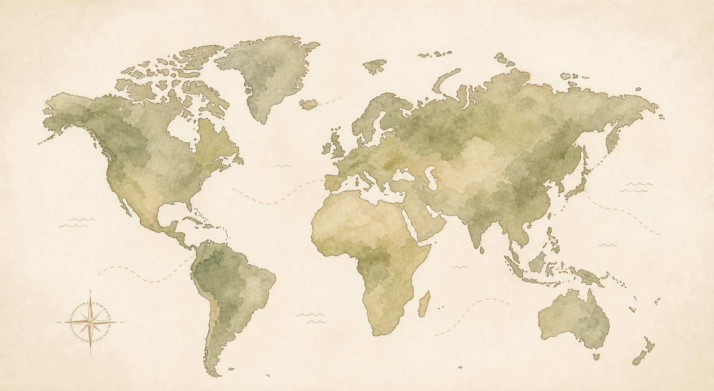

Bali
Beach days, local bites, and slow cafe corners.
Travel
Click a pin to read the story behind each place. For now, these are starter pins that can be changed to your real visited locations.

Beach days, local bites, and slow cafe corners.
City walks, small restaurants, snacks, and station discoveries.
Pasta, old streets, coffee stops, and sunset walks.